K-Pop
小学三四年级，韩流刚刚兴起、少女时代《Gee》火起来那会儿，我接触到了 K-pop—— “天呐她们好美！歌好好听！我也想变成她们那样！” 那时候我周围没有其他人跳舞，更没有现在遍地的舞房，我就每天自己在家，看着视频对着镜子，照猫画虎地学起来，一直自己跳到大学，才找到同样跳 K-pop 的伙伴。
这样算来，我已经陆续跳 K-pop 15 年了（OMG，居然这么久了）。K-pop 是世界上最好的爱好之一—— 去到任何国家的大城市，都能找到 K-pop cover group（我参加过的有：纽约、洛杉矶、新加坡、北京、上海、深圳、广州）， 很快就能融入当地人成为朋友，一起跳舞、一起出汗产生多巴胺，休息时坐在地上一起喝奶茶、一起表演，真的不要太快乐！
现在舞房遍地，跳舞变得方便太多了！除了 K-pop，我还跳各种其他舞种：Jazz、Hip-Hop、Heels、古典、肚皮舞、芭蕾。
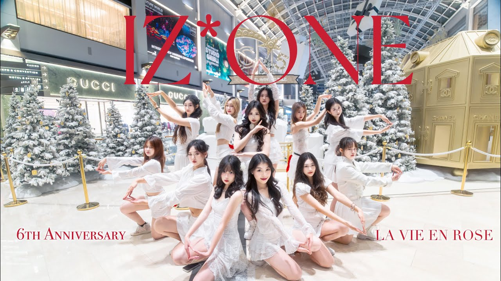
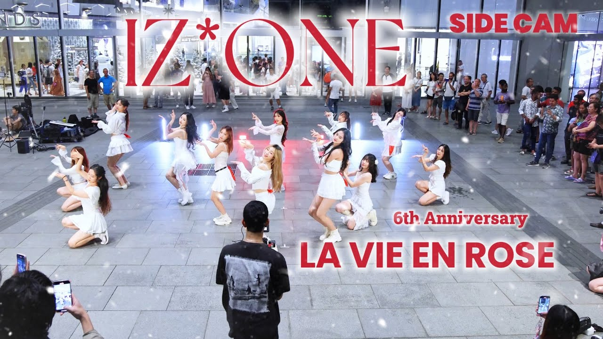
Side Cam · 我拍 + 剪辑 · 4:17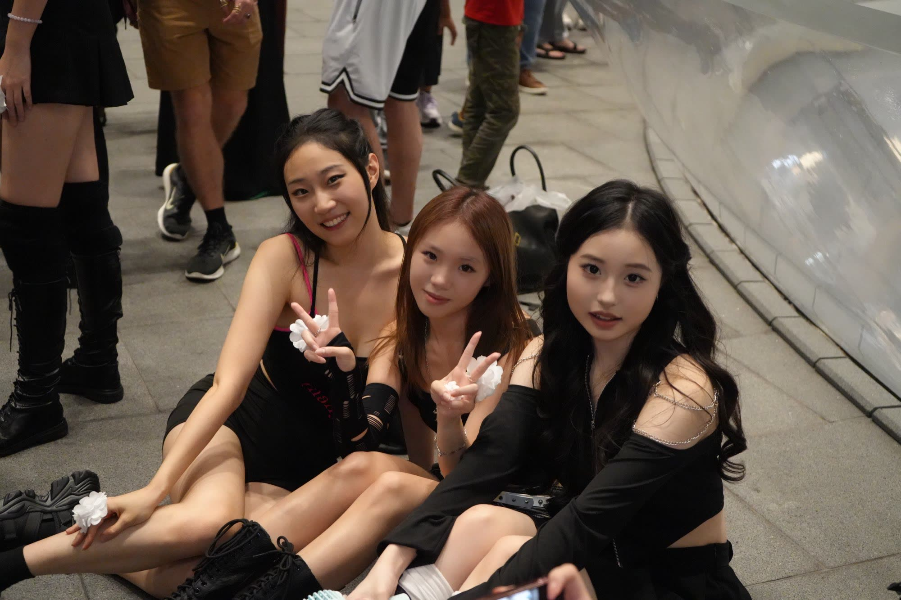
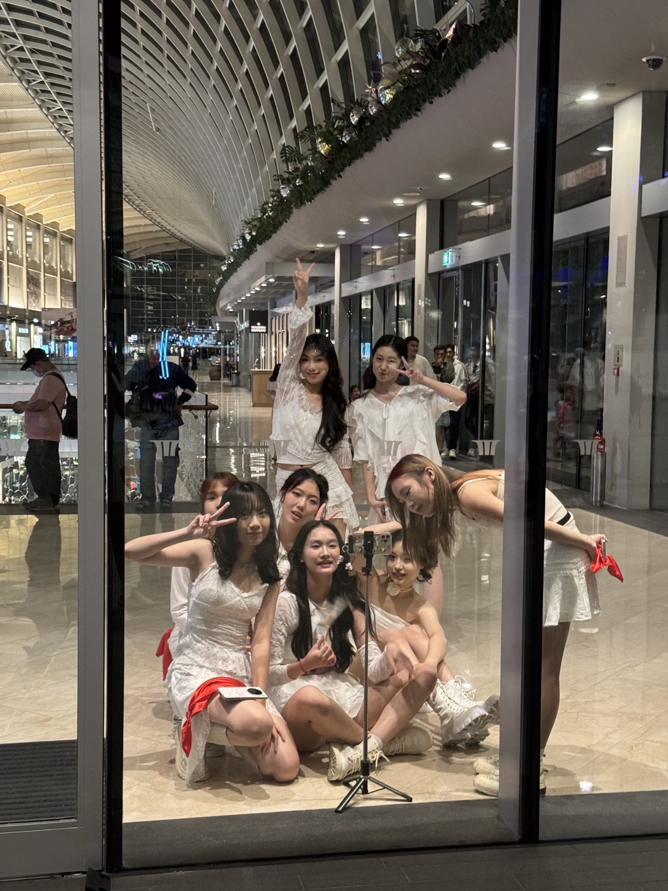
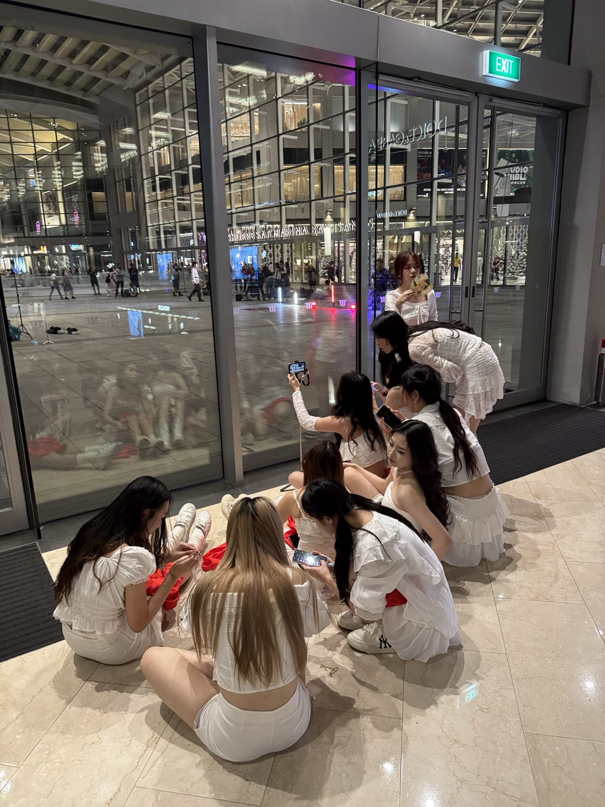
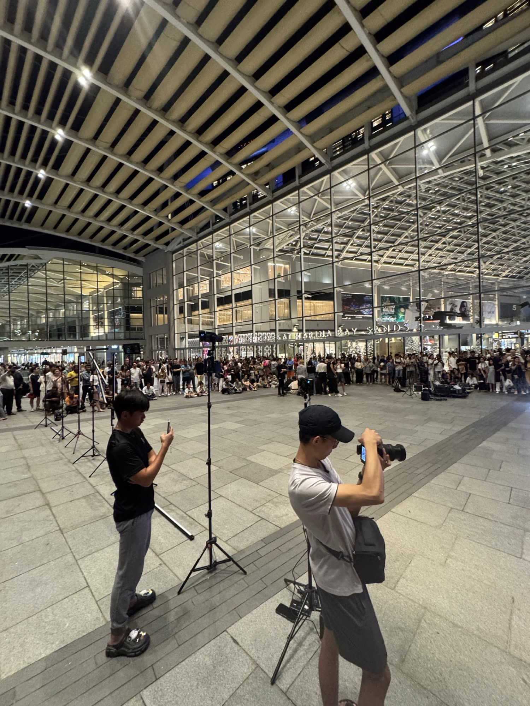
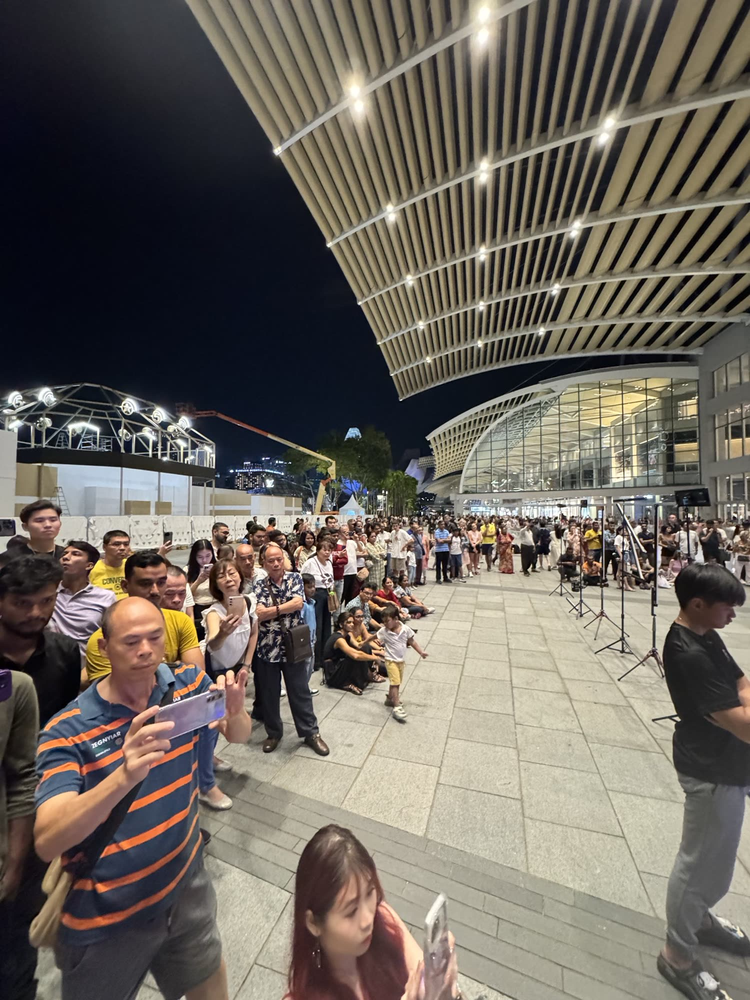
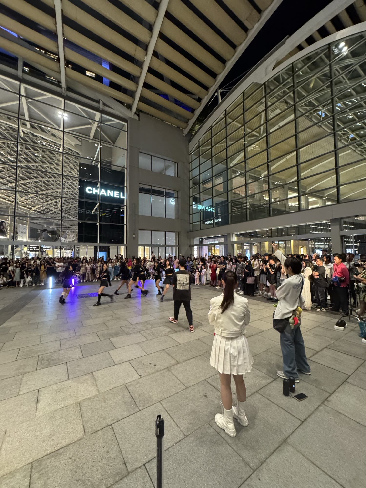
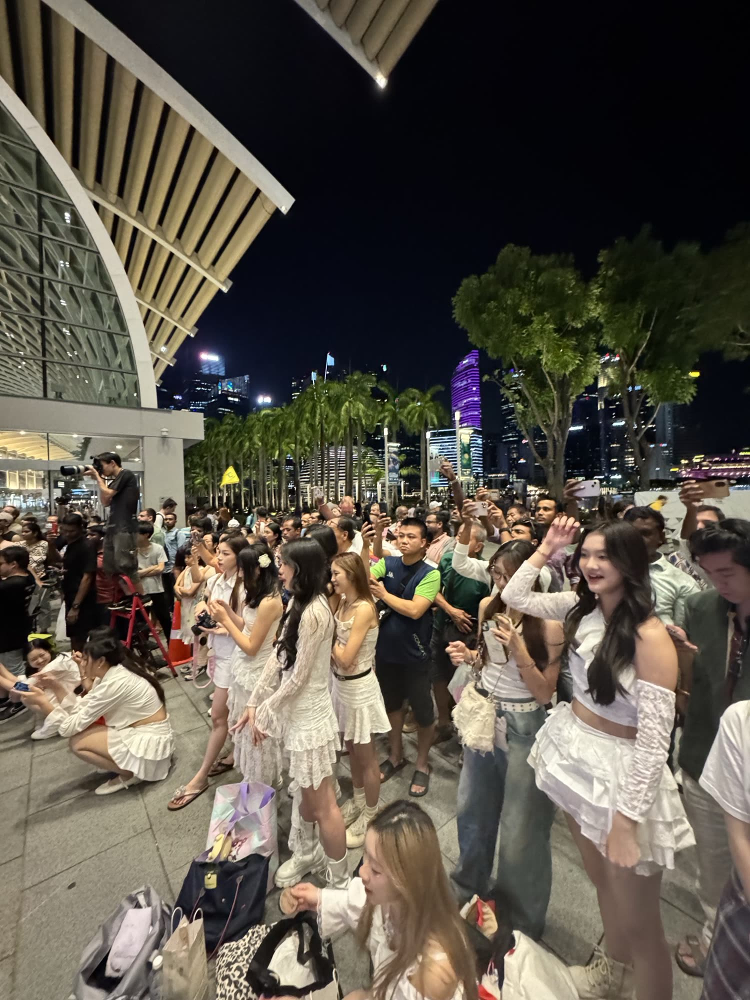
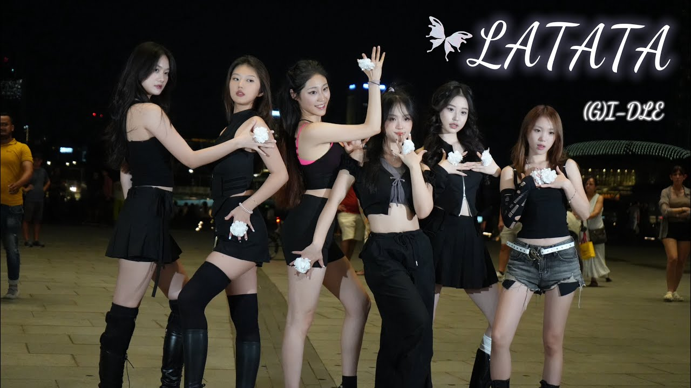
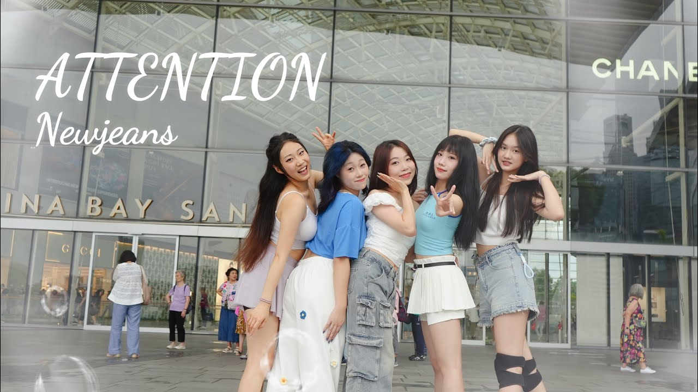
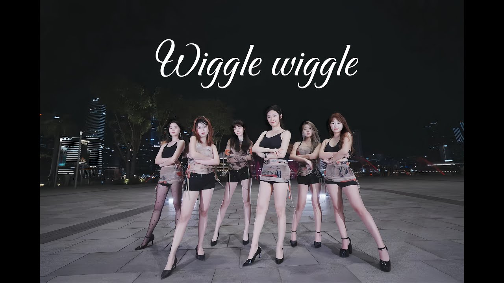
这一场我担任摄影师 + 后期剪辑。